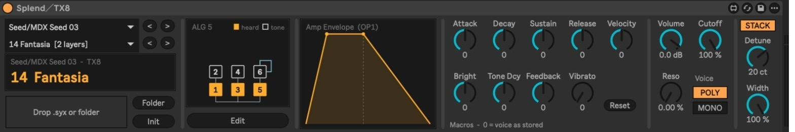
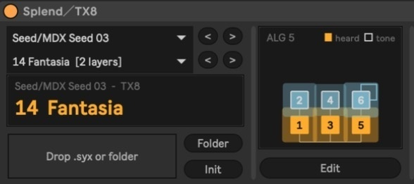
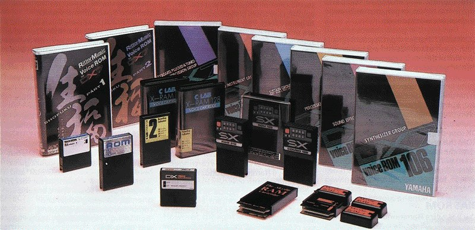
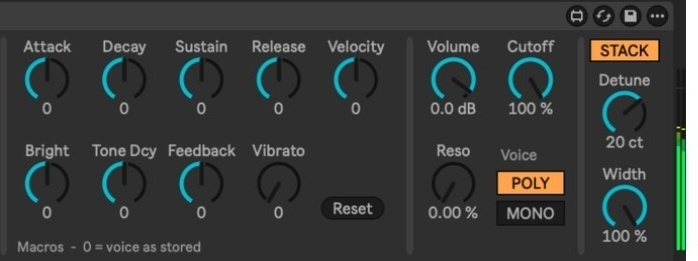
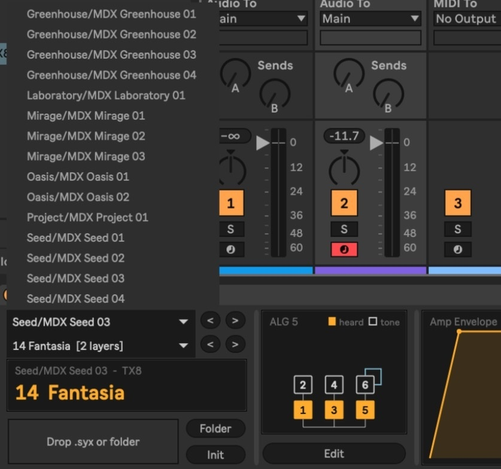
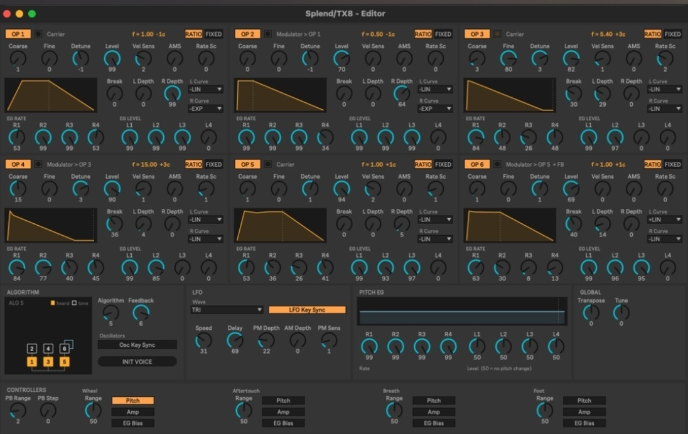
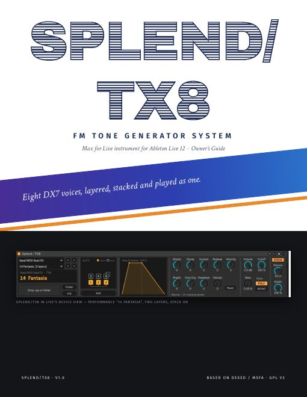

SPLEND/TX8
FM Tone Generator System · Max for Live instrument for Ableton Live 12
Bring the classic sound of DX7 .syx cartridges into Ableton Live.

Splend/TX8 is the first Splendour Sounds device: an Ableton Live device that loads the cartridges of the Yamaha DX7 (factory ROMs, VRC voice cards or your own banks) and plays them straight from a MIDI track. At its heart is a faithful 6-operator FM engine ported from Dexed, so the same patch sounds the same as it does in Dexed.
On top of that engine sits the trick of Yamaha’s TX816 rack: up to four DX7 voices playing together, detuned against each other and spread across the stereo field, all inside one compact strip that behaves like a stock Live instrument.
Hear it
A few sounds recorded straight from Splend/TX8. Each title is the preset used.
Your DX7 cartridges, inside Live
A DX7 cartridge is one .syx file holding 32 voices. Drop a .syx file, or a whole folder of them, onto the device, or click Folder. Sub-folders are scanned three levels deep, and Live remembers the folder, bank and voice with your set.
Pick a bank in the first menu and a voice in the second. The < > arrows let you audition sounds while you play, and MIDI Program Change 1–32 switches voices from a keyboard or a clip.

Thousands of classic sounds, free
The original factory ROMs, the VRC voice cards and many more DX7 banks are archived as free .syx downloads at Yamaha Black Boxes. Download a bank, drop it on Splend/TX8 and play it.

Fingertip control
Eleven macros shape any voice without opening the editor. Each one is an offset: at 0 you hear the voice exactly as it was programmed, and the stored patch never changes.
- Attack · Decay · Sustain · Release
- The amp envelope of every carrier.
- Bright
- The modulation index: more harmonics, brassier and more metallic.
- Tone Dcy
- How fast the bright attack closes, like a filter envelope.
- Reset
- Back to the voice as stored.

Layers & Stack: the TX816 trick
A performance plays up to four different DX7 voices at once, each with its own pan, detune, level and key range, for splits, drum maps and huge layered pads.
Press STACK and every note plays twice, detuned up to 30 cents and spread left and right. It is what makes the MiniDexed performances sound wide and deep, and it costs only about 1.3× CPU. Splend/TX8 ships with 15 banks (373 performances) converted from the MiniDexed collection.

The full editor, one click away
Press Edit for every parameter of the DX7 voice, laid out like Dexed: six operator panels with live envelope displays, plus algorithm, LFO, pitch EG and controllers. Hover any control with Live’s Info View open for a plain-language explanation.

Install steps, every macro, the layer files and the full specifications are in the manual below.
Standing on the shoulders of giants
Splend/TX8 would not be possible without the great work of everyone behind MiniDexed, Dexed and Yamaha.
Splend/TX8 is released under the GPL v3, like Dexed. DX7 and TX816 are trademarks of Yamaha Corporation; Splend/TX8 is an independent project not affiliated with Yamaha.

Splend/TX8 Manual
The complete owner’s guide (12 pages): getting started, the front panel, macros, layers and Stack, the editor, every operator parameter, MIDI, performance banks and specifications.